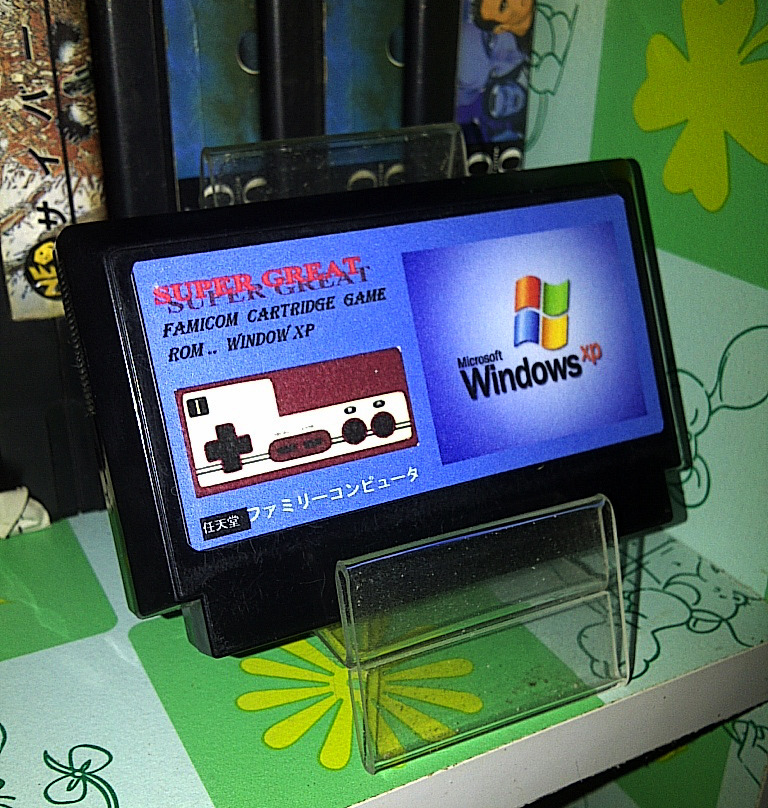
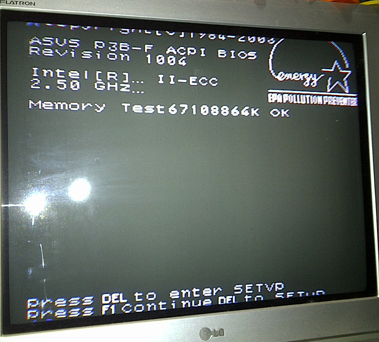
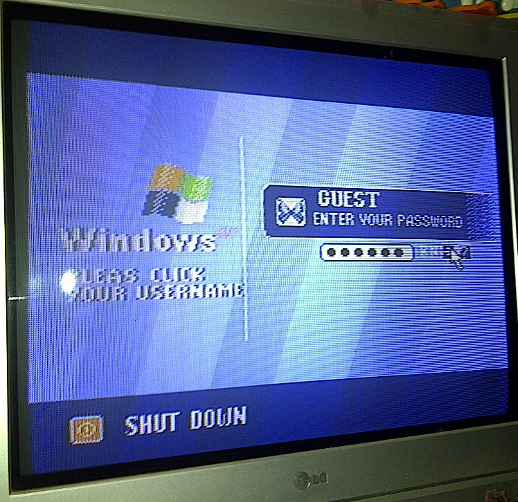
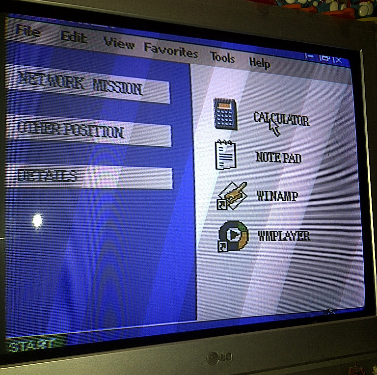

Here’s Windows XP for Famicom ⊟
Oh, excuse me, I meant Super Great Famicom Cartridge Game.. Window XP (via GN). I’m sure this has the full functionality of Microsoft’s PC operating system; after all, Windows XP is pretty old.
It has Winamp!
BUY Famicom stuff, upcoming games
That’s actually pretty cool.